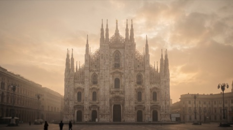
01
Duomo di Milano
Six hundred years of marble, and a roof you can walk.
Seven landmarks, one square mile, six hundred years. Milan’s centre — slowed down until it finally makes sense.
About
Milan hides its greatness in plain sight — behind a plain façade, under an arcade, inside a church that fakes its own depth. This walk slows the centre down: six hundred years of cathedral, gallery, opera house, medieval square and Bramante’s impossible apse, in a few hundred metres. Seven stops, one afternoon — and by the end the city reads differently, because now you know what you’re looking at.
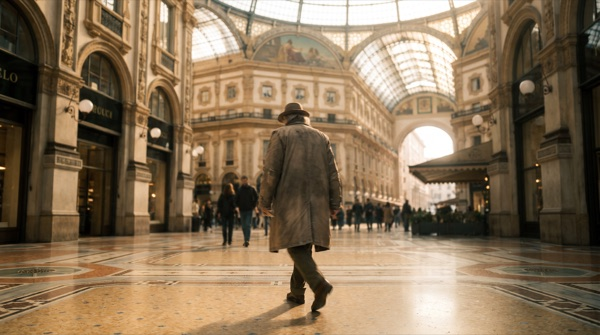
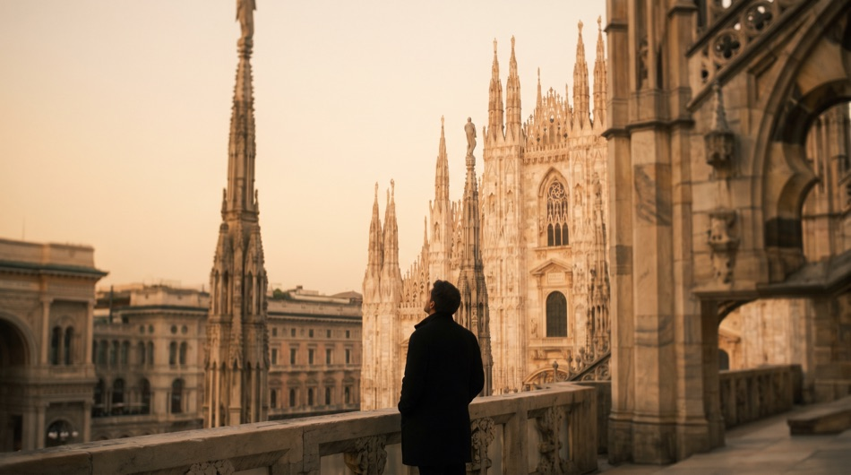
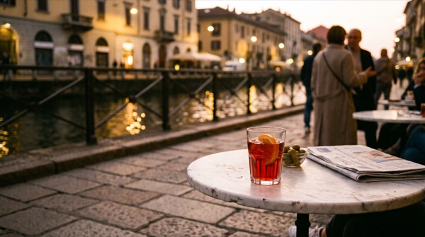
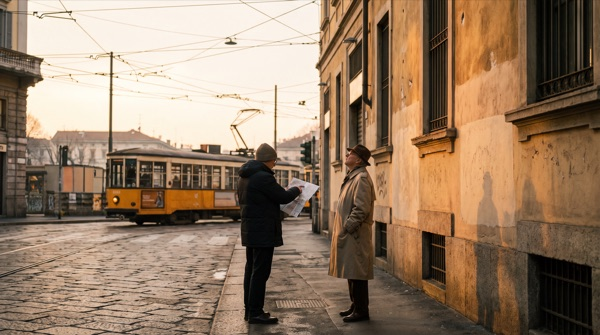
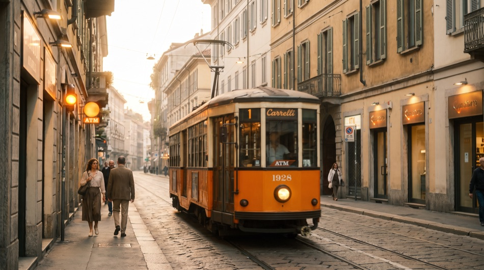
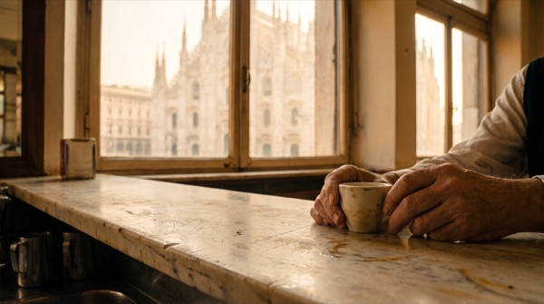
The route

Six hundred years of marble, and a roof you can walk.
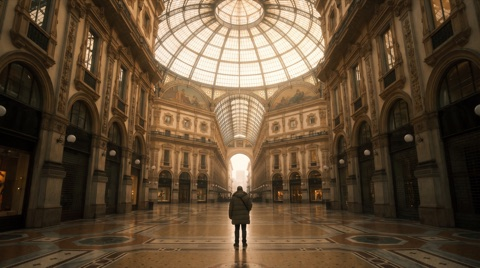
Glass, iron and mosaic — the oldest shopping arcade in Italy.
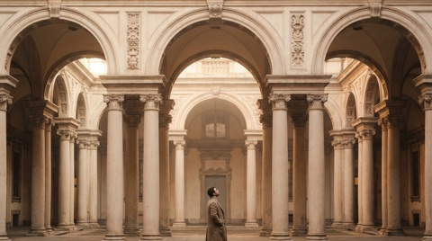
The city hall Milan almost never lets you inside.
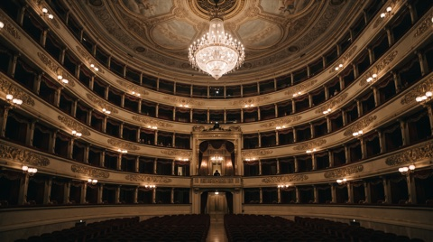
The plainest façade in Milan hides its loudest room.
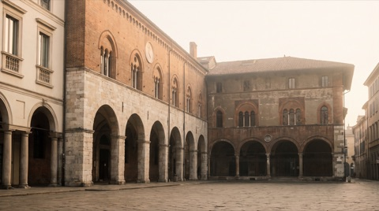
The medieval heart, from when the city was a handful of streets.
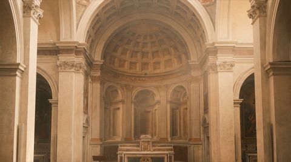
Step in and the church runs deep — except it doesn’t.
A courtyard, and Leonardo’s notebooks in the rooms beyond.
Formats
You might also like